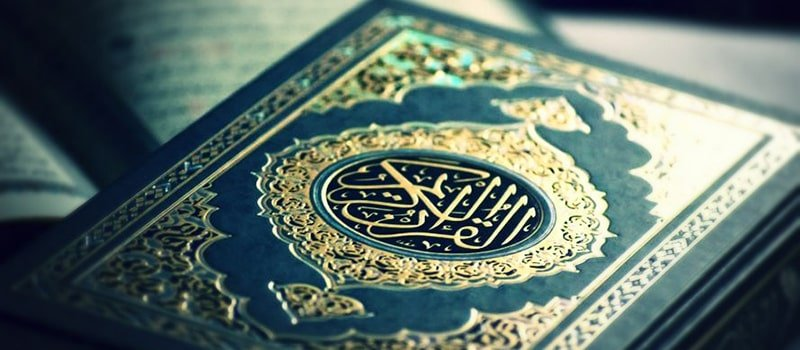

اليوم الرابع: القران الكريم
رمضان، الشهر الذي أُنزل فيه القرآن، هو أصلًا شهر القرآن. شهر الرجوع فيه إلى الله تعالى، والتقرّب إليه بقراءة القرآن، وفهمه، والعمل به في باقي حياتنا. الصلاة بدون قرآن روحها ناقصة، لأن القرآن هو الرسالة المباشرة من الله تعالى لنا جميعًا. فيه نأخذ الأوامر، ومنه نتعلّم كيف نتقرّب إلى الله ونفوز بالجنة.
الكثير من الناس يقرؤونه، ولكن القليل جدًا من يعقله ويفهمه ويعمل به، مع الأسف. القرآن ليس مجرد صفحات تقرأها وتأخذ حسنات عليها فقط، القرآن أُنزل لكي نعيشه أيضًا، نشعر به، ونعمل به في حياتنا. كل كلمة تقرأها في القرآن، اشعر وكأن الله يخاطبك بها. لا توجد كلمة أُنزلت بدون هدف وحكمة، فهذا كلام الله، الخالق العالِم بكل شيء.
عندما تقرأ: (بسم الله الرحمن الرحيم) وتفكّر فيها وتتأمّلها… الله هو الرحمن. الرحمن يعني الذي يرحم ويعفو. يعني الحنون. يعني أنه مهما عصيت وأتيت إليه، يسمعني ويغفر لي. باسمه آكل، وباسمه أشرب، وباسمه أعمل، وعليه أتوكل.
...فكّر في كل كلمة تقرأها. فكّر في جمالها. في صفاتها. في معانيها. تأمّلها. فكل كلمة نستطيع أن نكتب كتابًا كاملًا عنها. عندما تتعمّق، وتفكّر، وتعمل بالكلمات والآيات، سوف تحب الله أكثر. وسوف تفهم الدين أكثر. وسوف يصبح كل شيء سلسًا وسهلًا في هذه الحياة. وهذا الشعور استثنائي، جميل جدًا، لا يوجد مثله أبدًا. كان بعض الصحابة يؤمنون بالله ويدخلون الإسلام بسبب عدة آيات فقط، لأنهم كانوا يفقهون اللغة العربية حينها، وكانوا يتفكّرون في الكلمات المنزلة، ويعرفون معانيها، ويعرفون مدى قوتها وعظمتها.
عندما نقرأ القرآن كثيرًا قد يصبح عادة. ونسأل بعضنا: كم ختمة ختمت هذا الشهر؟ كم صفحة قرأت اليوم؟ ولا نسأل أنفسنا أبدًا: كم آية عملت بها اليوم؟ يجب أن نقرأ القرآن وكأننا أول مرة نسمعه. وكأننا أول مرة نقرأه. تخيّل أن كل آية نزلت لأجلك أنت. وقل لنفسك: هكذا يطلب الله مني… لبيك يا الله. الله سبحانه قال: ﴿شَهْرُ رَمَضَانَ الَّذِي أُنزِلَ فِيهِ الْقُرْآنُ﴾ وقال سبحانه: ﴿وَنُنَزِّلُ مِنَ الْقُرْآنِ مَا هُوَ شِفَاءٌ وَرَحْمَةٌ لِّلْمُؤْمِنِينَ﴾ وقال النبي ﷺ: «اقرؤوا القرآن فإنه يأتي يوم القيامة شفيعًا لأصحابه» – رواه مسلم. القرآن هو نور لطريقنا. نور لقلوبنا. نور لأيامنا. وشفيع لنا يوم القيامة… إن كنا من أصحابه حقًا، لا من قارئيه فقط.
اسال الله رب العالمين ان يجعل القران العظيم ربيع قلوبنا ونور صدورنا وذهاب همومنا وغمومنا وان يحببنا به اكثر واكثر ويجعله شفيعا لنا يوم القيامة. فنحن نملك ذهبا.. بل شيئ لا يقدر باي ثمن ولا يشبه اي شيء اطلاقا على وجه الارض.. فاستغلوه.